writing
It's Almost 2024
The rough draft of the rough draft
published on 10.30.23jake weber
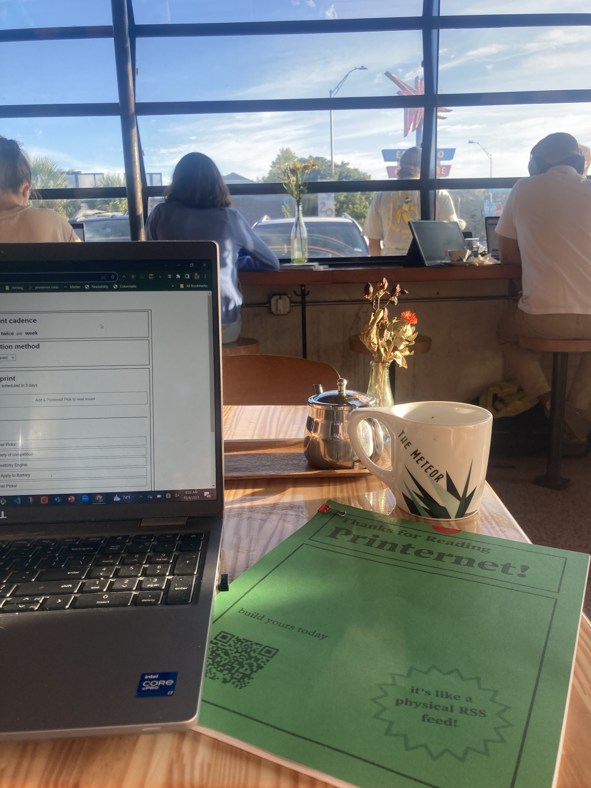
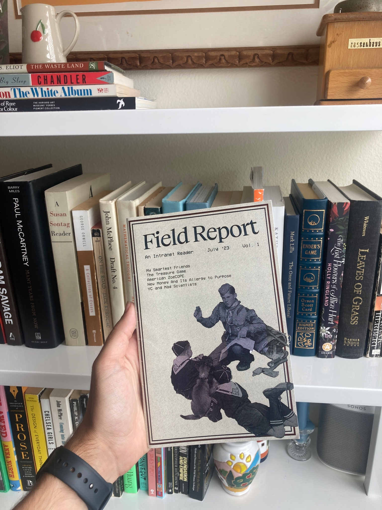
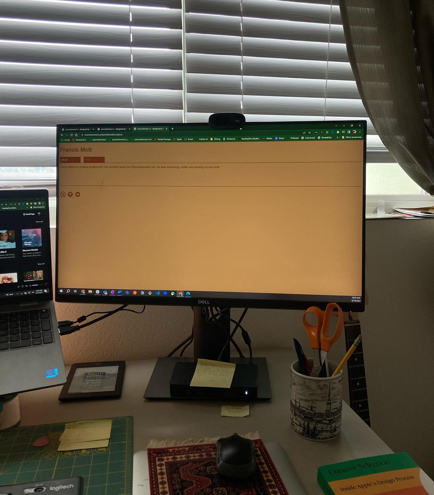
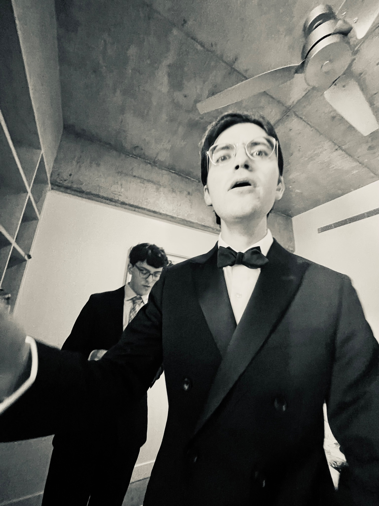
History of Rough Drafts Over Resolutions
At the end of 2021, I was looking to plan the type of 2022 I wanted to have. I came up with the idea (as a blend of ideas I'd heard from others) of writing a rough draft for my year. I imagined that the year had already happened and that I was writing about it after the fact. I wrote about my accomplishments and how I spent my time throughout the year (that had in fact not happened yet). Here is a post with more detail on writing an annual rough draft. An essential step to writing an annual rough draft for your upcoming year is reflecting on the year you just had. It is very clarifying to sort the kinds of things that gave you energy and the ones that filled you with quiet dread or anxiety or simply exhausted or bored you. I want to start that reflection process this morning!
2023 - the good stuff
I spent a lot of this year coding, writing, and shipping Printernet orders. This has been fantastic and I want to at least double the amount of time I get to do these things in 2024.
I also traveled with my brother in the first half of the year which was awesome. I'd love to do another trip with my siblings.
In the middle of the year, Tessa and I got married! It was very magical being around all our closest friends and family. Can we replicate that experience without getting married again?
We've also had the travel bug. We are planning on taking our honey moon in 2024 so that would be fantastic.
I also spent a ton of time this year meeting really cool people working on very cool things (keep an eye out for my annual "coolest folks I discovered" post). I want to continue sharing my writing and work online and finding others doing the same. Meeting driven curious people is extremely energy enhancing for me.
I recorded five podcast episodes as an experiment this year (with one more coming up). This has been extremely fun so far and I want to keep going. And of course, I want to share these with people in the new year.
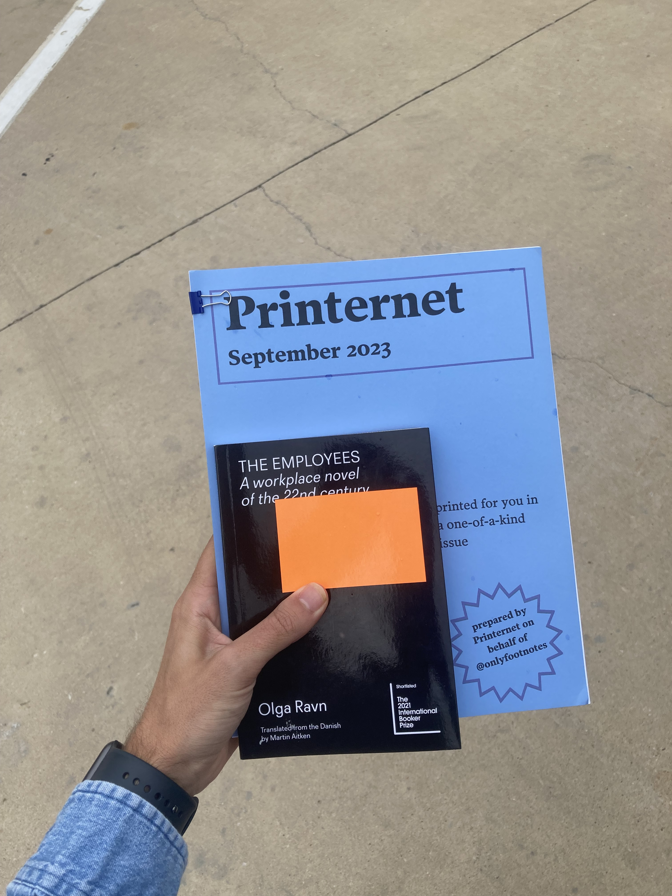
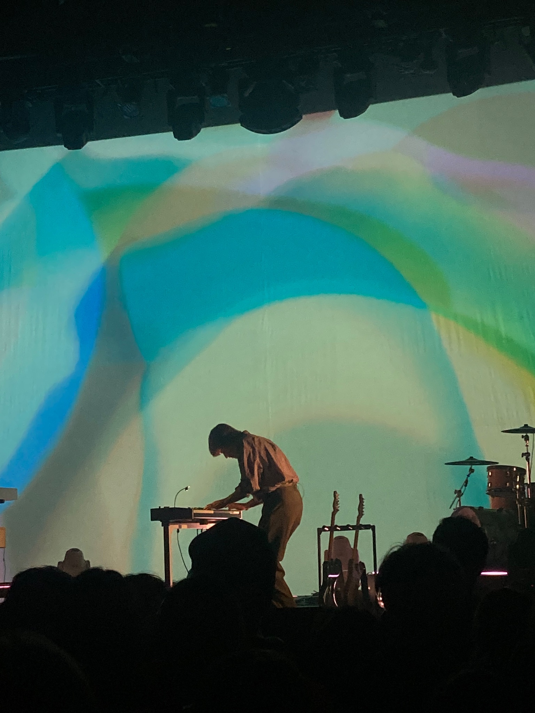
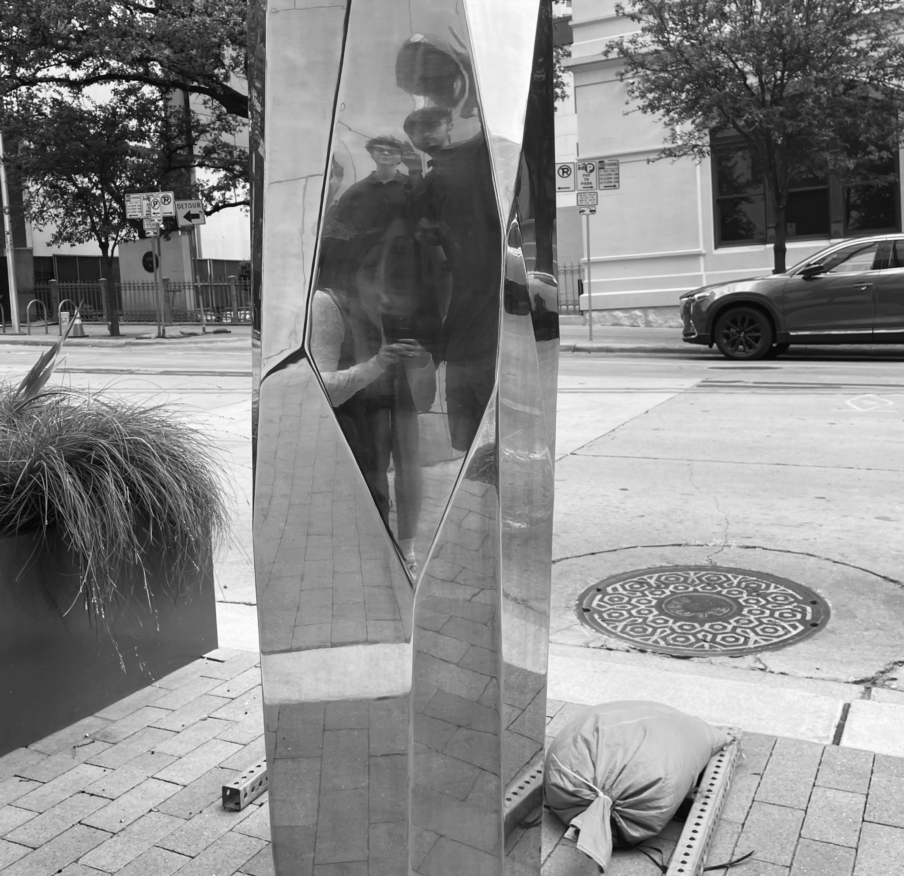
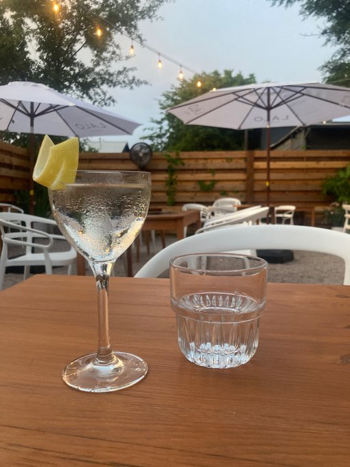
I made more money from things I created than I ever have before. It is extremely satisfying to get to create something I love and have other people love it too. The more of this I can do, the happier I'll be.
I had my fiction published and available nationwide. I'd love to continue sharing my writing on similar scales.
I took a fantastic song writing course with one of my favorite musicians of all time, Scott McMicken. This was through School of Song. It was amazing getting to hear from Scott about his process and to share my tunes with so many other talented folks. I also went to an in-person final song share with other Texas based musicians from the class and that was super fun. More music + live music in 2024 would be great.
I did 30 Days of Creative Programming which was a very successful and rewarding experiment. I want to do "30 Days of X" again in 2024 and continue pushing my abilities in programming.
Tessa and I created the most sustainable and informed personal finance strategy we ever have. I am referring to personal budgets, investments, benefits and retirement stuff. Most credit to Tessa here, but it is working really well. We plan to double down on it in 2024.
Running in the last two quarters of the year has been very great. More running and an official race would be cool.
Wrote a lot of posts and recorded a lot of demos I am proud of! More of this.
Celebrating my sister's art and achievements has been awesome. I expect her 2024 to be incredible and I am super excited to attend more screenings and openings or cheer on her work.
Project Euler! Started PE this year and although I've only had time for the first 6 problems in the last month or so, it has been extremely satisfying thining about math puzzles again and getting more coding practice in. Want to do at least another ten problems in 2024.
We've picked up the ole sourdough hobby and it rocks. More bread in 2024.
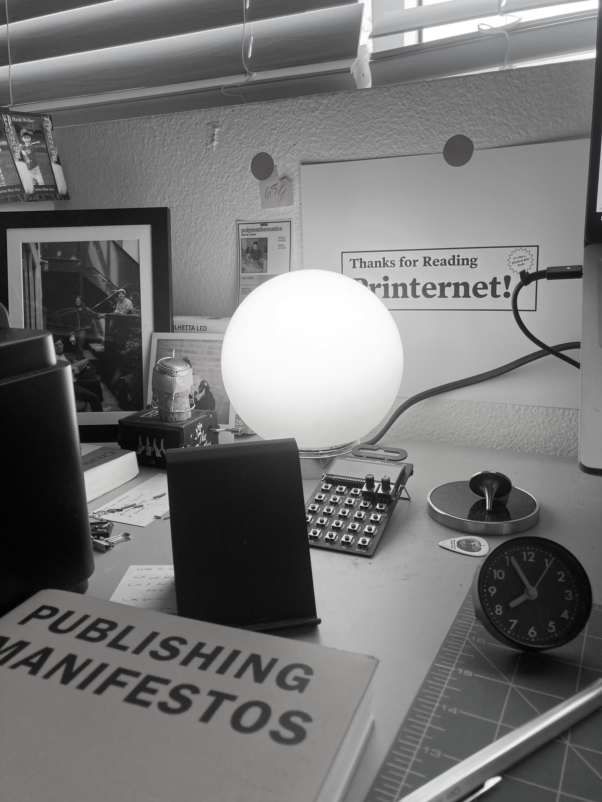
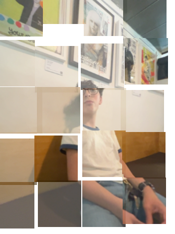
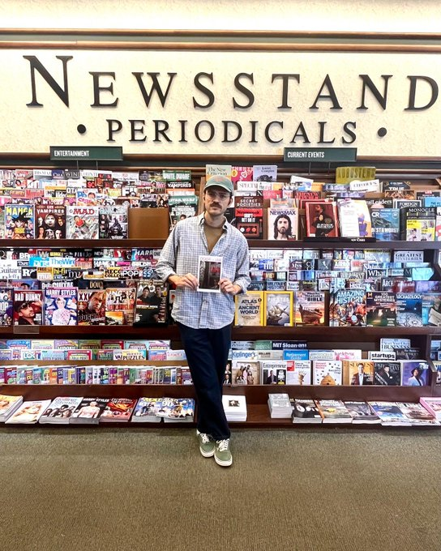
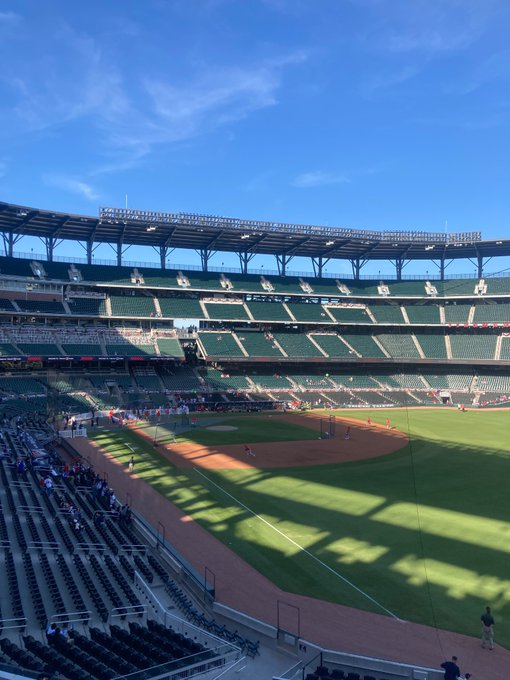
2023 - the not so good stuff
I spread my focus too thin at various points of the year. I want to keep experimenting with my "train car" approach to creativity where I chunk several weeks / months for a singlular focus. This seems to work really well. I need to get better at the skill of "not now, later I hope." I get extremely excited about new projects and love the 0 -> 1 period. Keep focusing on the stuff that is working and the other stuff should be taken on with extreme caution.
The work I do that I am not curious or excited about took its toll. I want to keep experimenting with ways to do less of this and more of the real work.
Running injury to start the new year. Take the first few runs of the year very slow since they usually come after a break from the holiday lull. Prioritize getting to do this for a long time, even when it is tedious and boring.
The anxiety of competition and self-doubt. Most of the time I am confident with my ideas and patient / longterm oriented. But there are peaks and valleys and the anxiety and self-doubt around not doing enough / the absolute best work I can imagine takes up too much mind space sometimes. Continue writing on this, talking about it, and finding ways of letting it go.
comments